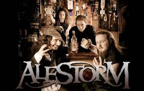
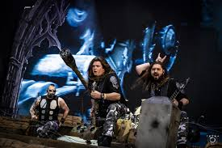

Alestorm

Membres du groupe
- Christopher Bowes
- Gareth Murdock
- Peter Alcorn
- Elliot Vernon
- Máté Bodor
Discographie
- 2008 : Captain Morgan's Revenge
- 2009 : Black Sails at Midnight
- 2011 : Back Through Time
- 2014 : Sunset on the Golden Age
- 2017 : No Grave But The Sea
- 2020 : Curse of the Crystal Coconut
- 2022 : Seventh Rum Of A Seventh Rum
Gloryhammer
Membres du groupe
- Christopher Bowes
- Paul Templing
- James Cartwright
- Ben Turk
- Sozos Michael
Discographie
- 2013 : Tales from the Kingdom of Fife
- 2015 : Space 1992 : Rise of the Chaos Wizards
- 2019 : Legends from Beyond the Galactic Terrorvortex
Wind Roses

Membres du groupe
- Francesco Cavalieri
- Claudio Falconcini
- Federico Meranda
- Cristiano Bertocchi
- Federico Gatti
Discographie
- 2012 : Shadows over Lothadruin
- 2015 : Wardens of the West Wind
- 2017 : Stonehymn
- 2019 : Wintersaga
- 2022 : Warfront
Rumahoy
Membres du groupe
- Captain Yarrface
- Bootsman Walktheplank
- Cabinboy Treasurequest
- Swashbuckling Pet
Discographie
- 2018 : The triumph of piracy
- 2019 : Time II : party
Aktarum
Membres du groupe
- TrollAklass
- TrollOur
- Trollhammer
- Trollbar
- Arpad Gencsek
Discographie
- 2008 : " We are the trolls"
- 2010 : " Gang of trolls"
- 2014 : " Game of Trolls"
- 2018 : " Ragnatroll"